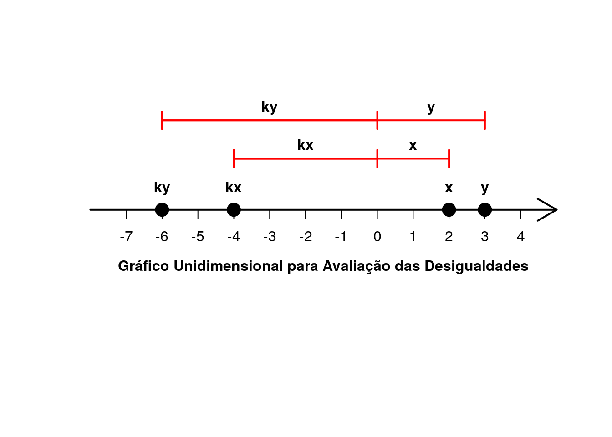
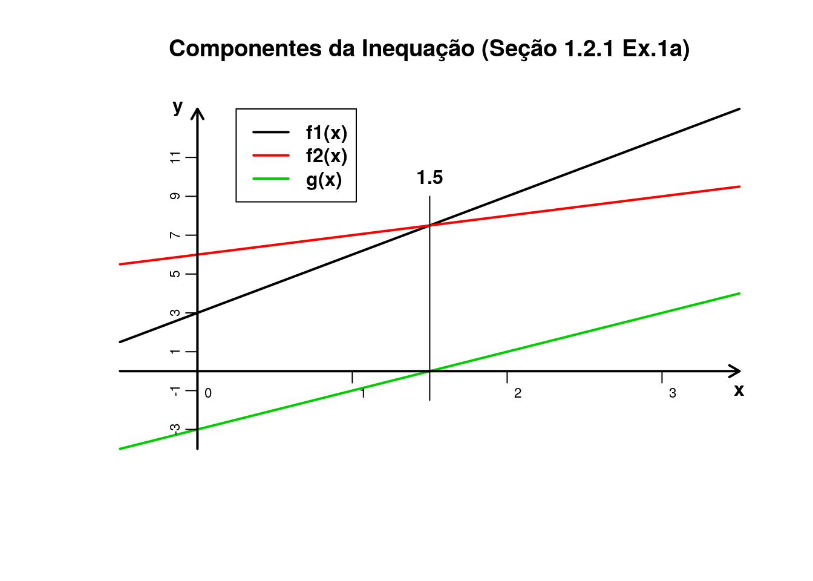
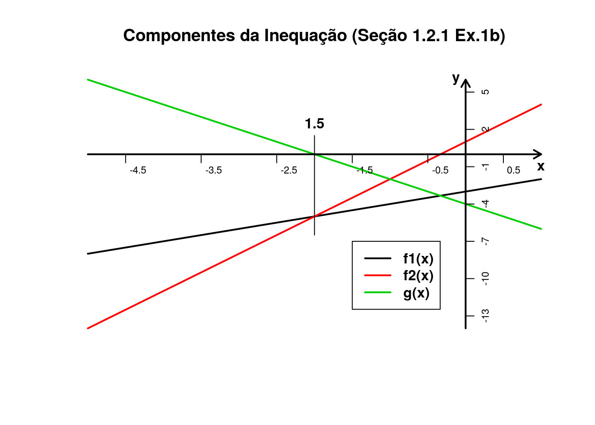
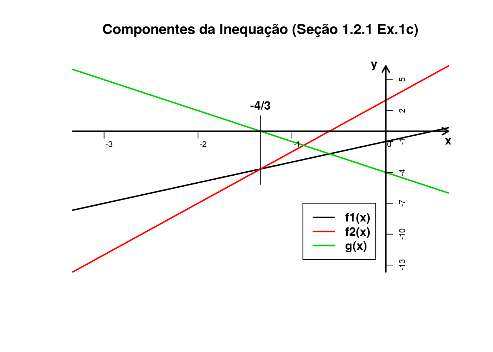
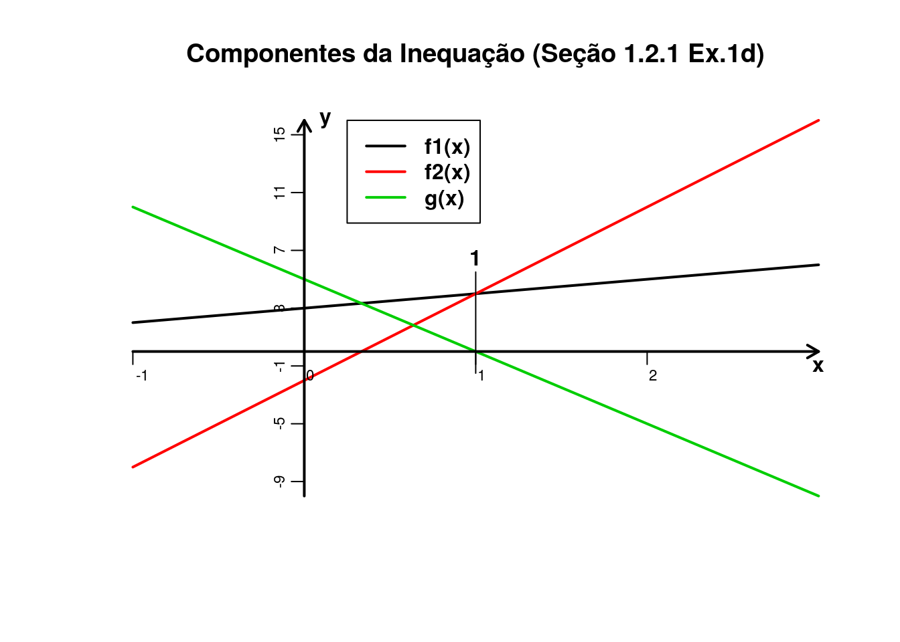
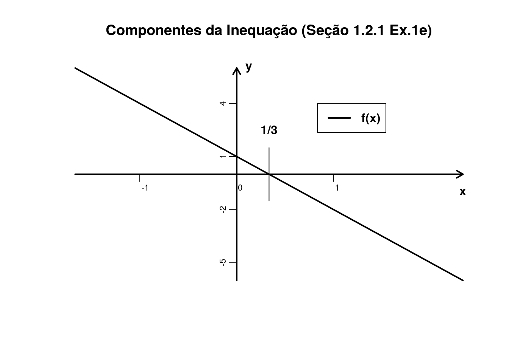

Capítulo 1 Números reais
1.1 Os Números Racionais
Por uma questão de notação admitiremos aqui que, sendo \(r\) um número racional, se \(r \leqslant 0\), dizemos que \(r\) é não positivo. Da mesma forma, se \(r \geqslant 0\), dizemos que \(r\) é não negativo.
Vale acrescentar aqui algumas definições que poderão auxiliar na leitura do livro.
- Abscissa: Trata-se da coordenada de um ponto sobre uma reta.
- Irredutível: Algo que não se pode reduzir. Uma fração é dita irredutível quando está em sua forma mais reduzida possível.
1.2 Os Números Reais
EXEMPLO 4. (Página 6) Suponha \(x \geqslant 0\) e \(y \geqslant 0\). Prove:
- \(x \leqslant y \Rightarrow x^{2} \leqslant y^{2}\).
Resolução:
\[\textrm{e} \ \left.\begin{matrix} 0 \leqslant x \leqslant y\\ 0 \leqslant x \leqslant y \end{matrix}\right\} \overset{(OM)}{\Rightarrow} \ \textrm{e} \ \left.\begin{matrix} xx \leqslant xy \\ xy \leqslant yy \end{matrix}\right\} \overset{(O3)}{\Rightarrow} xx \leqslant xy \leqslant yy \Rightarrow xx \leqslant yy \Rightarrow x^{2} \leqslant y^{2}\]
# Estudo por simulação:
## Semente:
set.seed(sum(utf8ToInt("BGuide")))
## Quantidade de números a serem gerados:
n <- 1000000
## Gera-se aqui 'n' números aleatórios seguindo a distribuição Uniforme de
## parâmetros 'min = 0' e 'max = 1':
x <- runif(n)
## Em seguida geramos mais 'n' números aleatórios seguindo uma distribuição
## Uniforme de parâmetros 'min = x' e 'max = 1'. Isto faz com que todos os
## números armazenados em y[i] sejam maiores do que os armazenados em x[i], com
## 'i' variando de 1 a 'n'. Mas não implica que y[i] seja maior do que x[j] com
## 'j' também variando de 1 a 'n' e 'i != j':
y <- runif(n, min = x)
## Soma a quantidade de verificações onde a afirmação 'x^2 <= y^2' for
## verdadeira:
sum(x^2 <= y^2)## [1] 1000000## Observe que o resultado é 1.000.000, exatamente a quantidade de números
## uniformes no intervalo (0, 1) que foram gerados. Logo para todas as
## simulações obteve-se 'x^2 <= y^2'.
## Obs.: O resultado obtido por simulação não prova a propriedade acima, apenas
## cria evidências a favor dela. A simulação não é necessária aqui pois a
## propriedade pode ser provada analiticamente.
EXEMPLO 9. (Página 9) Resolva a inequação \(\frac{3x-1}{x+2} \geqslant 5\).
Sendo \(x < 2\):
\[\frac{3x-1}{x+2} \geqslant 5 \Leftrightarrow 3x-1 \leqslant 5(x+2).\]
Então o autor pergunta: Por quê?
Sabemos que \(1 < 2\), se multiplicássemos esta expressão por \(-1\) sem alterarmos o sentido da desigualdade teríamos \(-1 < -2\) e sabemos que esta afirmação não é verdadeira. Considerando \(a < 0\), se multiplicarmos uma desigualdade por \(a\) altera-se o sentido da desigualdade pois refletimos estes valores para o outro lado de um eixo com relação a origem a uma taxa de progressão \(\left | a \right |\). Porém, ao realizar este processo a direção de crescimento das unidades permanece a mesma (não é refletida).
# Exemplo gráfico
## O gráfico a seguir tem como objetivo a visualização do que foi dito
## anteriormente. Nele pode-se observar a propriedade 'x <= y ==> ky <= kx'
## quando 'k < 0'. No exemplo utilizaremos 'x = 2', 'y = 3' e 'k = -2'.
## Cria um vetor dos valores a serem plotados:
xy <- c(2, 3)
k <- -2
pontos <- c(k*xy, xy)
## Atribui 0 aos valores de y
pontos <- cbind(pontos, 0)
## Atribui nome às coordenadas
rownames(pontos) <- c("kx", "ky", "x", "y")
## Cria gráfico unidimensional:
plot(pontos, bty = 'n', xaxt = 'n', yaxt = 'n', ylab = '', xlab = '',
ylim = c(-1, 1),
xlim = c(pontos[2, 1] - 2, pontos[4, 1] + 2), pch = 19, cex = 2)
## Eixo do sistema:
arrows(x0 = pontos[2, 1] - 2, x1 = pontos[4, 1] + 2,
y0 = 0, y1 = 0, lwd = 2)
## Retas de distância:
arrows(x0 = pontos[1, 1], x1 = c(0, pontos[3, 1]),
y0 = 0.4, y1 = 0.4,
angle = 90, code = 3, col = "red", lwd = 2, length = 0.1)
arrows(x0 = pontos[2, 1], x1 = c(0, pontos[4, 1]),
y0 = 0.7, y1 = 0.7,
angle = 90, code = 3, col = "red", lwd = 2, length = 0.1)
## Enumeração do eixo:
axis(side = 1, seq(-7, 4, 1), pos = 0)
## Legenda:
text(pontos, labels = rownames(pontos), pos = 3, offset = 1, font = 2)
text(x = pontos[1, 1]/2, labels = rownames(pontos)[1], y = 0.4,
pos = 3, font = 2)
text(x = pontos[2, 1]/2, labels = rownames(pontos)[2], y = 0.7,
pos = 3, font = 2)
text(x = pontos[3, 1]/2, labels = rownames(pontos)[3], y = 0.4,
pos = 3, font = 2)
text(x = pontos[4, 1]/2, labels = rownames(pontos)[4], y = 0.7,
pos = 3, font = 2)
text(y = 0, x = (pontos[2, 1] + pontos[4, 1])/2,
labels = "Gráfico Unidimensional para Avaliação das Desigualdades",
pos = 1, offset = 3, font = 2)
1.2.1 Exercícios Resolvidos
(Página 10) Resolva a inequação.
- \(3x+3 < x+6\)
# Resolução no R ## Para resolver a inequação pelo R consideraremos as seguintes expressões: ## 'f1(x) = 3x + 3' e 'f2(x) = x + 6'. f1 <- function(x){ 3*x + 3 } f2 <- function(x){ x + 6 } ## A desigualdade é 'f1(x) < f2(x)' logo 'f1(x) - f2(x) < 0'. Portanto ## queremos os valores de x para os quais 'f1(x) - f2(x)' seja menor que zero. ## Começaremos achando a raiz da expressão 'f1(x) - f2(x)'. ## A função abaixo utiliza iterações para achar a raiz em um intervalo ## pré-determinado, utiliza-se aqui o intervalo (-10, 10) mas é possível inserir ## grandes intervalos a um certo custo de tempo computacional (neste caso ## razoável). r <- uniroot(function(x){f1(x) - f2(x)}, c(-10, 10))$root r## [1] 1.5## O resultado revela somente a raiz da função. No entanto queremos saber onde ## se localizam os valores positivos e negativos da função. ## Chamaremos nessa etapa a expressão 'f1(x) - f2(x)' de 'g(x)'. g <- function(x){ f1(x) - f2(x) } ## Sabemos que a raiz da função 'g(x)' é 1.5, logo basta verificarmos os ## valores ao redor da raiz. x <- seq(from = r - 0.5, to = r + 0.5, by = 0.25) data.frame(x, g(x))## x g.x. ## 1 1.00 -1.0 ## 2 1.25 -0.5 ## 3 1.50 0.0 ## 4 1.75 0.5 ## 5 2.00 1.0## Pode-se observar que para valores menores que 1.5, g(x) assume valores ## negativos. Logo os valores de x que satisfazem a inequação são dados por ## 'x < 1.5' # Exemplo Gráfico ## O gráfico a seguir representa f1(x), f2(x) e g(x). Observe que para valores ## menores que 1.5 temos f1(x) < f2(x) e g(x) < 0, para x = 1.5 temos ## f1(x) = f2(x) e g(x) = 0 e para valores maiores que 1.5 temos f1(x) > f2(x) e ## g(x) > 0. ## Vetor para determinar a amplitude do eixo das abscissas: v <- c(r - 2, r + 2) ## Determina a amplitude do eixo das ordenadas: mini <- min(f1(v), f2(v), g(v)) maxi <- max(f1(v), f2(v), g(v)) ## Curvas: curve(f1, from = v[1], to = v[2], xlim = v, ylim = c(mini, maxi), lwd = 2, bty = 'n', xaxt = 'n', yaxt = 'n', ylab = '', xlab = '', main = 'Componentes da Inequação (Seção 1.2.1 Ex.1a)') curve(f2, from = v[1], to = v[2], add = TRUE, col = 2, lwd = 2) curve(g, from = v[1], to = v[2], add = TRUE, col = 3, lwd = 2) ## Eixos: arrows(x0 = v[1], x1 = v[2], y0 = 0, y1 = 0, lwd = 2, length = 0.1) arrows(x0 = 0, x1 = 0, y0 = mini, y1 = maxi, lwd = 2, length = 0.1) ## Comprimento da reta vertical que passa pelo ponto de intersecção: const <- 1.5 minim <- min(f1(r), f2(r), g(r)) - const maxim <- max(f1(r), f2(r), g(r)) + const ## Reta vertical que passa pelo ponto de intersecção: segments(x0 = r, x1 = r, y0 = minim, y1 = maxim, lwd = 1) ## Enumeração dos eixos: axis(side = 1, c(seq(v[1] + 0.5, v[2] - 0.5, 1)), hadj = -1, padj = -1.5, pos = 0, cex.axis = 0.7) axis(side = 2, c(seq(mini + 1, maxi - 1, 2)), padj = 1, pos = 0, cex.axis = 0.7) ## Legenda: legend(v[1] + 0.75, maxi, col = c(1, 2, 3), c('f1(x)', 'f2(x)', 'g(x)'), lwd = 2, text.font = 2) text(x = c(v[2], -0.125, r), y = c(-1, maxi, maxim + 1), labels = c("x", "y", "1.5"), font = 2)
- \(x-3 > 3x+1\)
# Resolução no R ## Para resolver a inequação pelo R consideraremos as seguintes expressões: ## 'f1(x) = x - 3' e 'f2(x) = 3x + 1'. f1 <- function(x){ x - 3 } f2 <- function(x){ 3*x + 1 } ## A desigualdade é 'f1(x) < f2(x)' logo 'f1(x) - f2(x) > 0'. Portanto ## queremos os valores de x para os quais 'f1(x) - f2(x)' seja maior que zero. ## Começaremos achando a raiz da expressão 'f1(x) - f2(x)'. ## A função abaixo utiliza iterações para achar a raiz em um intervalo ## pré-determinado, utiliza-se aqui o intervalo (-10, 10) mas é possível inserir ## grandes intervalos a um certo custo de tempo computacional (neste caso ## razoável). r <- uniroot(function(x){f1(x) - f2(x)}, c(-10, 10))$root r## [1] -2## O resultado revela somente a raiz da função. No entanto queremos saber onde ## se localizam os valores positivos e negativos da função. ## Chamaremos nessa etapa a expressão 'f1(x) - f2(x)' de 'g(x)'. g <- function(x){ f1(x) - f2(x) } ## Sabemos que a raiz da função 'g(x)' é -2, logo basta verificarmos os ## valores ao redor da raiz. x <- seq(from = r - 0.5, to = r + 0.5, by = 0.25) data.frame(x, g(x))## x g.x. ## 1 -2.50 1.0 ## 2 -2.25 0.5 ## 3 -2.00 0.0 ## 4 -1.75 -0.5 ## 5 -1.50 -1.0## Pode-se observar que para valores menores que -2, g(x) assume valores ## positivos. Logo os valores de x que satisfazem a inequação são dados por ## 'x < -2' # Exemplo Gráfico ## O gráfico a seguir representa f1(x), f2(x) e g(x). Observe que para valores ## menores que -2 temos f1(x) > f2(x) e g(x) > 0, para x = 1.5 temos ## f1(x) = f2(x) e g(x) = 0 e para valores maiores que -2 temos f1(x) < f2(x) e ## g(x) < 0. ## Vetor para determinar a amplitude do eixo das abscissas: v <- c(r - 3, r + 3) ## Determina a amplitude do eixo das ordenadas: mini <- min(f1(v), f2(v), g(v)) maxi <- max(f1(v), f2(v), g(v)) ## Curvas: curve(f1, from = v[1], to = v[2], xlim = v, ylim = c(mini, maxi), lwd = 2, bty = 'n', xaxt = 'n', yaxt = 'n', ylab = '', xlab = '', main = 'Componentes da Inequação (Seção 1.2.1 Ex.1b)') curve(f2, from = v[1], to = v[2], add = TRUE, col = 2, lwd = 2) curve(g, from = v[1], to = v[2], add = TRUE, col = 3, lwd = 2) ## Eixos: arrows(x0 = v[1], x1 = v[2], y0 = 0, y1 = 0, lwd = 2, length = 0.1) arrows(x0 = 0, x1 = 0, y0 = mini, y1 = maxi, lwd = 2, length = 0.1) ## Comprimento da reta vertical que passa pelo ponto de intersecção: const <- 1.5 minim <- min(f1(r), f2(r), g(r)) - const maxim <- max(f1(r), f2(r), g(r)) + const ## Reta vertical que passa pelo ponto de intersecção: segments(x0 = r, x1 = r, y0 = minim, y1 = maxim, lwd = 1) ## Enumeração dos eixos: axis(side = 1, c(seq(v[1] + 0.5, v[2] - 0.5, 1)), hadj = -0.25, padj = -1.5, pos = 0, cex.axis = 0.7) axis(side = 4, c(seq(mini + 1, maxi - 1, 3)), padj = -1, pos = 0, cex.axis = 0.7) ## Legenda: legend(r + 0.5, -7, col = c(1, 2, 3), c('f1(x)', 'f2(x)', 'g(x)'), lwd = 2, text.font = 2) text(x = c(v[2], -0.125, r), y = c(-1, maxi, maxim + 1), labels = c("x", "y", "1.5"), font = 2)
- \(2x-1 \geqslant 5x+3\)
# Resolução no R ## Para resolver a inequação pelo R consideraremos as seguintes expressões: ## 'f1(x) = 2x - 1' e 'f2(x) = 5x + 3'. f1 <- function(x){ 2*x - 1 } f2 <- function(x){ 5*x + 3 } ## A desigualdade é 'f1(x) >= f2(x)' logo 'f1(x) - f2(x) >= 0'. Portanto ## queremos os valores de x para os quais 'f1(x) - f2(x)' seja maior ou igual a ## zero. ## Começaremos achando a raiz da expressão 'f1(x) - f2(x)'. ## A função abaixo utiliza iterações para achar a raiz em um intervalo ## pré-determinado, utiliza-se aqui o intervalo (-10, 10) mas é possível inserir ## grandes intervalos a um certo custo de tempo computacional (neste caso ## razoável). r <- uniroot(function(x){f1(x) - f2(x)}, c(-10, 10))$root r## [1] -1.333333## O resultado revela somente a raiz da função. No entanto queremos saber onde ## se localizam os valores positivos e negativos da função. ## Chamaremos nessa etapa a expressão 'f1(x) - f2(x)' de 'g(x)'. g <- function(x){ f1(x) - f2(x) } ## Sabemos que a raiz da função 'g(x)' é -1.33, logo basta verificarmos os ## valores ao redor da raiz. x <- seq(from = r - 0.5, to = r + 0.5, by = 0.25) data.frame(x, g(x))## x g.x. ## 1 -1.8333333 1.500000e+00 ## 2 -1.5833333 7.500000e-01 ## 3 -1.3333333 1.776357e-15 ## 4 -1.0833333 -7.500000e-01 ## 5 -0.8333333 -1.500000e+00## Pode-se observar que para valores menores que -1.33, g(x) assume valores ## positivos. Logo os valores de x que satisfazem a inequação são dados por ## 'x <= -1.33' ou 'x <= -4/3'. # Exemplo Gráfico ## O gráfico a seguir representa f1(x), f2(x) e g(x). Observe que para valores ## menores que -1.33 temos f1(x) > f2(x) e g(x) > 0, para x = -1.33 temos ## f1(x) = f2(x) e g(x) = 0 e para valores maiores que -1.33 temos ## f1(x) < f2(x) e g(x) < 0. ## Vetor para determinar a amplitude do eixo das abscissas: v <- c(r - 2, r + 2) ## Determina a amplitude do eixo das ordenadas: mini <- min(f1(v), f2(v), g(v)) maxi <- max(f1(v), f2(v), g(v)) ## Curvas: curve(f1, from = v[1], to = v[2], xlim = v, ylim = c(mini, maxi), lwd = 2, bty = 'n', xaxt = 'n', yaxt = 'n', ylab = '', xlab = '', main = 'Componentes da Inequação (Seção 1.2.1 Ex.1c)') curve(f2, from = v[1], to = v[2], add = TRUE, col = 2, lwd = 2) curve(g, from = v[1], to = v[2], add = TRUE, col = 3, lwd = 2) ## Eixos: arrows(x0 = v[1], x1 = v[2], y0 = 0, y1 = 0, lwd = 2, length = 0.1) arrows(x0 = 0, x1 = 0, y0 = mini, y1 = maxi, lwd = 2, length = 0.1) ## Comprimento da reta vertical que passa pelo ponto de intersecção: const <- 1.5 minim <- min(f1(r), f2(r), g(r)) - const maxim <- max(f1(r), f2(r), g(r)) + const ## Reta vertical que passa pelo ponto de intersecção: segments(x0 = r, x1 = r, y0 = minim, y1 = maxim, lwd = 1) ## Enumeração dos eixos: axis(side = 1, c(seq(round(v[1]), round(v[2]) - 0.5, 1)), hadj = -0.25, padj = -1.5, pos = 0, cex.axis = 0.7) axis(side = 4, c(seq(round(mini) + 1, round(maxi) - 1, 3)), padj = -1, pos = 0, cex.axis = 0.7) ## Legenda: legend(r + 0.45, -7, col = c(1, 2, 3), c('f1(x)', 'f2(x)', 'g(x)'), lwd = 2, text.font = 2) text(x = c(v[2], -0.125, r), y = c(-1, maxi, maxim + 1), labels = c("x", "y", "-4/3"), font = 2)
- \(x+3 \leqslant 6x-2\)
# Resolução no R ## Para resolver a inequação pelo R consideraremos as seguintes expressões: ## 'f1(x) = x + 3' e 'f2(x) = 6x - 2'. f1 <- function(x){ x + 3 } f2 <- function(x){ 6*x - 2 } ## A desigualdade é 'f1(x) <= f2(x)' logo 'f1(x) - f2(x) <= 0'. Portanto ## queremos os valores de x para os quais 'f1(x) - f2(x)' seja menor ou igual a ## zero. ## Começaremos achando a raiz da expressão 'f1(x) - f2(x)'. ## A função abaixo utiliza iterações para achar a raiz em um intervalo ## pré-determinado, utiliza-se aqui o intervalo (-10, 10) mas é possível inserir ## grandes intervalos a um certo custo de tempo computacional (neste caso ## razoável). r <- uniroot(function(x){f1(x) - f2(x)}, c(-10, 10))$root r## [1] 1## O resultado revela somente a raiz da função. No entanto queremos saber onde ## se localizam os valores positivos e negativos da função. ## Chamaremos nessa etapa a expressão 'f1(x) - f2(x)' de 'g(x)'. g <- function(x){ f1(x) - f2(x) } ## Sabemos que a raiz da função 'g(x)' é 1, logo basta verificarmos os valores ## ao redor da raiz. x <- seq(from = r - 0.5, to = r + 0.5, by = 0.25) data.frame(x, g(x))## x g.x. ## 1 0.50 2.500000e+00 ## 2 0.75 1.250000e+00 ## 3 1.00 -8.881784e-15 ## 4 1.25 -1.250000e+00 ## 5 1.50 -2.500000e+00## Pode-se observar que para valores maiores que 1, g(x) assume valores ## negativos. Logo os valores de x que satisfazem a inequação são dados por ## 'x >= 1'. # Exemplo Gráfico ## O gráfico a seguir representa f1(x), f2(x) e g(x). Observe que para valores ## menores que 1 temos f1(x) > f2(x) e g(x) > 0, para x = 1 temos f1(x) = f2(x) ## e g(x) = 0 e para valores maiores que 1 temos f1(x) < f2(x) e g(x) < 0. ## Vetor para determinar a amplitude do eixo das abscissas: v <- c(r - 2, r + 2) ## Determina a amplitude do eixo das ordenadas: mini <- min(f1(v), f2(v), g(v)) maxi <- max(f1(v), f2(v), g(v)) ## Curvas: curve(f1, from = v[1], to = v[2], xlim = v, ylim = c(mini, maxi), lwd = 2, bty = 'n', xaxt = 'n', yaxt = 'n', ylab = '', xlab = '', main = 'Componentes da Inequação (Seção 1.2.1 Ex.1d)') curve(f2, from = v[1], to = v[2], add = TRUE, col = 2, lwd = 2) curve(g, from = v[1], to = v[2], add = TRUE, col = 3, lwd = 2) ## Eixos: arrows(x0 = v[1], x1 = v[2], y0 = 0, y1 = 0, lwd = 2, length = 0.1) arrows(x0 = 0, x1 = 0, y0 = mini, y1 = maxi, lwd = 2, length = 0.1) ## Comprimento da reta vertical que passa pelo ponto de intersecção: const <- 1.5 minim <- min(f1(r), f2(r), g(r)) - const maxim <- max(f1(r), f2(r), g(r)) + const ## Reta vertical que passa pelo ponto de intersecção: segments(x0 = r, x1 = r, y0 = minim, y1 = maxim, lwd = 1) ## Enumeração dos eixos: axis(side = 1, c(seq(round(v[1]), round(v[2]) - 0.5, 1)), hadj = -0.25, padj = -1.5, pos = 0, cex.axis = 0.7) axis(side = 2, c(seq(round(mini) + 1, round(maxi) - 1, 4)), padj = 1, pos = 0, cex.axis = 0.7) ## Legenda: legend(r - 0.75, 16, col = c(1, 2, 3), c('f1(x)', 'f2(x)', 'g(x)'), lwd = 2, text.font = 2) text(x = c(v[2], 0.125, r), y = c(-1, maxi, maxim + 1), labels = c("x", "y", "1"), font = 2)
- \(1-3x > 0\)
# Resolução no R ## Para resolver a inequação pelo R consideraremos a seguinte expressão: ## 'f(x) = 1 - 3x'. f <- function(x){ 1 - 3*x } ## A desigualdade é 'f(x) < 0'. Portanto queremos os valores de x para os quais ## 'f(x)' seja menor que zero. ## Começaremos achando a raiz de 'f(x)'. ## A função abaixo utiliza iterações para achar a raiz em um intervalo ## pré-determinado, utiliza-se aqui o intervalo (-10, 10) mas é possível inserir ## grandes intervalos a um certo custo de tempo computacional (neste caso ## razoável). r <- uniroot(f, c(-10, 10))$root r## [1] 0.3333333## O resultado revela somente a raiz da função. No entanto queremos saber onde ## se localizam os valores positivos e negativos da função. ## Sabemos que a raiz da função 'f(x)' é 1/3, logo basta verificarmos os ## valores ao redor da raiz. x <- seq(from = r - 0.5, to = r + 0.5, by = 0.25) data.frame(x, f(x))## x f.x. ## 1 -0.16666667 1.500000e+00 ## 2 0.08333333 7.500000e-01 ## 3 0.33333333 -7.105427e-15 ## 4 0.58333333 -7.500000e-01 ## 5 0.83333333 -1.500000e+00## Pode-se observar que para valores menores que 1/3, f(x) assume valores ## positivos. Logo os valores de x que satisfazem a inequação são dados por ## 'x < 1/3'. # Exemplo Gráfico ## O gráfico a seguir representa f(x). Observe que para valores menores que 1/3 ## temos f(x) > 0, para x = 1/3 temos f(x) = 0 e para valores maiores que 1/3 ## temos f(x) < 0. ## Vetor para determinar a amplitude do eixo das abscissas: v <- c(r - 2, r + 2) ## Determina a amplitude do eixo das ordenadas: mini <- min(f(v)) maxi <- max(f(v)) ## Curvas: curve(f, from = v[1], to = v[2], xlim = v, ylim = c(mini, maxi), lwd = 2, bty = 'n', xaxt = 'n', yaxt = 'n', ylab = '', xlab = '', main = 'Componentes da Inequação (Seção 1.2.1 Ex.1e)') ## Eixos: arrows(x0 = v[1], x1 = v[2], y0 = 0, y1 = 0, lwd = 2, length = 0.1) arrows(x0 = 0, x1 = 0, y0 = mini, y1 = maxi, lwd = 2, length = 0.1) ## Comprimento da reta vertical que passa pelo ponto de intersecção: const <- 1.5 minim <- min(f(r)) - const maxim <- max(f(r)) + const ## Reta vertical que passa pelo ponto de intersecção: segments(x0 = r, x1 = r, y0 = minim, y1 = maxim, lwd = 1) ## Enumeração dos eixos: axis(side = 1, c(seq(round(v[1]) + 1, round(v[2]) - 0.5, 1)), hadj = -0.25, padj = -1.5, pos = 0, cex.axis = 0.7) axis(side = 2, c(seq(round(mini) + 1, round(maxi) - 1, 3)), padj = 1, pos = 0, cex.axis = 0.7) ## Adiciona componentes do gráfico: legend(r + 0.5, 4, col = 1, 'f(x)', lwd = 2, text.font = 2) text(x = c(v[2], 0.125, r), y = c(-1, maxi, maxim + 1), labels = c("x", "y", "1/3"), font = 2)
- \(2x+1 \geqslant 3x\)
# Resolução no R ## Para resolver a inequação pelo R consideraremos as seguintes expressões: ## 'f1(x) = 2x + 1' e 'f2(x) = 3x'. f1 <- function(x){ 2*x + 1 } f2 <- function(x){ 3*x } ## A desigualdade é 'f1(x) >= f2(x)' logo 'f1(x) - f2(x) >= 0'. Portanto ## queremos os valores de x para os quais 'f1(x) - f2(x)' seja maior ou igual a ## zero. ## Começaremos achando a raiz da expressão 'f1(x) - f2(x)'. ## A função abaixo utiliza iterações para achar a raiz em um intervalo ## pré-determinado, utiliza-se aqui o intervalo (-10, 10) mas é possível inserir ## grandes intervalos a um certo custo de tempo computacional (neste caso ## razoável). r <- uniroot(function(x){f1(x) - f2(x)}, c(-10, 10))$root r## [1] 1## O resultado revela somente a raiz da função. No entanto queremos saber onde ## se localizam os valores positivos e negativos da função. ## Chamaremos nessa etapa a expressão 'f1(x) - f2(x)' de 'g(x)'. g <- function(x){ f1(x) - f2(x) } ## Sabemos que a raiz da função 'g(x)' é 1, logo basta verificarmos os valores ## ao redor da raiz. x <- seq(from = r - 0.5, to = r + 0.5, by = 0.25) data.frame(x, g(x))## x g.x. ## 1 0.50 5.000000e-01 ## 2 0.75 2.500000e-01 ## 3 1.00 -1.776357e-15 ## 4 1.25 -2.500000e-01 ## 5 1.50 -5.000000e-01## Pode-se observar que para valores menores que 1, g(x) assume valores ## positivos. Logo os valores de x que satisfazem a inequação são dados por ## 'x <= 1'. # Exemplo Gráfico ## O gráfico a seguir representa f1(x), f2(x) e g(x). Observe que para valores ## menores que 1 temos f1(x) > f2(x) e g(x) > 0, para x = 1 temos f1(x) = f2(x) ## e g(x) = 0 e para valores maiores que 1 temos f1(x) < f2(x) e g(x) < 0. ## Vetor para determinar a amplitude do eixo das abscissas: v <- c(r - 2, r + 2) ## Determina a amplitude do eixo das ordenadas: mini <- min(f1(v), f2(v), g(v)) maxi <- max(f1(v), f2(v), g(v)) ## Curvas: curve(f1, from = v[1], to = v[2], xlim = v, ylim = c(mini, maxi), lwd = 2, bty = 'n', xaxt = 'n', yaxt = 'n', ylab = '', xlab = '', main = 'Componentes da Inequação (Seção 1.2.1 Ex.1f)') curve(f2, from = v[1], to = v[2], add = TRUE, col = 2, lwd = 2) curve(g, from = v[1], to = v[2], add = TRUE, col = 3, lwd = 2) ## Eixos: arrows(x0 = v[1], x1 = v[2], y0 = 0, y1 = 0, lwd = 2, length = 0.1) arrows(x0 = 0, x1 = 0, y0 = mini, y1 = maxi, lwd = 2, length = 0.1) ## Comprimento da reta vertical que passa pelo ponto de intersecção: const <- 1.5 minim <- min(f1(r), f2(r), g(r)) - const maxim <- max(f1(r), f2(r), g(r)) + const ## Reta vertical que passa pelo ponto de intersecção: segments(x0 = r, x1 = r, y0 = minim, y1 = maxim, lwd = 1) ## Enumeração dos eixos: axis(side = 1, c(seq(round(v[1]), round(v[2]) - 0.5, 1)), hadj = -0.25, padj = -1.5, pos = 0, cex.axis = 0.7) axis(side = 2, c(seq(round(mini) + 1, round(maxi) - 1, 3)), padj = 1, pos = 0, cex.axis = 0.7) ## Legenda: legend(0.1, 8, col = c(1, 2, 3), c('f1(x)', 'f2(x)', 'g(x)'), lwd = 2, text.font = 2) text(x = c(v[2], 0.125, r), y = c(-1, maxi, maxim + 1), labels = c("x", "y", "1"), font = 2)
(Página 10) Estude o sinal da expressão.
\(3x-1\)
- \(f(x) = 0\) (raiz):
- \(f(x) < 0\):
- \(f(x) > 0\):
# Resolução no R ## Para estudar o sinal da expressão pelo R começaremos construindo a função: f <- function(x){ 3*x - 1 } ## Começaremos achando a raiz da expressão f(x) ou seja, os valores de x para ## os quais f(x) = 0. ## A função abaixo utiliza iterações para achar a raiz em um intervalo ## pré-determinado, utiliza-se aqui o intervalo (-10, 10) mas é possível inserir ## grandes intervalos a um certo custo de tempo computacional (neste caso ## razoável). r <- uniroot(f, c(-10, 10))$root r## [1] 0.3333333## Logo para x = 1/3 temos f(x) = 0. ## Queremos saber também onde se localizam os valores positivos e negativos da ## função. Para isso basta verificarmos os valores ao redor da raiz. x <- seq(from = r - 0.5, to = r + 0.5, by = 0.25) data.frame(x, f(x))## x f.x. ## 1 -0.16666667 -1.500000e+00 ## 2 0.08333333 -7.500000e-01 ## 3 0.33333333 7.105427e-15 ## 4 0.58333333 7.500000e-01 ## 5 0.83333333 1.500000e+00## Pode-se observar que para valores menores que 1/3, f(x) assume valores ## negativos e para valores maiores que 1/3, f(x) assume valores positivos. ## Para uma visualização gráfica do problema consulte o Exercício 1 da Seção ## 1.2.1 e tente reproduzir os gráficos para este problema. Caso encontre ## dificuldades entre em contato através do meu e-mail: ## geronymobruno@hotmail.com.\(3-x\)
- \(f(x) = 0\) (raiz):
- \(f(x) < 0\):
- \(f(x) > 0\):
# Resolução no R ## Para estudar o sinal da expressão pelo R começaremos construindo a função: f <- function(x){ 3 - x } ## Começaremos achando a raiz da expressão f(x) ou seja, os valores de x para ## os quais f(x) = 0. ## A função abaixo utiliza iterações para achar a raiz em um intervalo ## pré-determinado, utiliza-se aqui o intervalo (-10, 10) mas é possível inserir ## grandes intervalos a um certo custo de tempo computacional (neste caso ## razoável). r <- uniroot(f, c(-10, 10))$root r## [1] 3## Logo para x = 3 temos f(x) = 0. ## Queremos saber também onde se localizam os valores positivos e negativos da ## função. Para isso basta verificarmos os valores ao redor da raiz. x <- seq(from = r - 0.5, to = r + 0.5, by = 0.25) data.frame(x, f(x))## x f.x. ## 1 2.50 0.50 ## 2 2.75 0.25 ## 3 3.00 0.00 ## 4 3.25 -0.25 ## 5 3.50 -0.50## Pode-se observar que para valores menores que 3, f(x) assume valores ## positivos e para valores maiores que 3, f(x) assume valores negativos. ## Para uma visualização gráfica do problema consulte o Exercício 1 da Seção ## 1.2.1 e tente reproduzir os gráficos para este problema. Caso encontre ## dificuldades entre em contato através do meu e-mail: ## geronymobruno@hotmail.com.\(2-3x\)
- \(f(x) = 0\) (raiz):
- \(f(x) < 0\):
- \(f(x) > 0\):
# Resolução no R ## Para estudar o sinal da expressão pelo R começaremos construindo a função: f <- function(x){ 2 - 3*x } ## Começaremos achando a raiz da expressão f(x) ou seja, os valores de x para ## os quais f(x) = 0. ## A função abaixo utiliza iterações para achar a raiz em um intervalo ## pré-determinado, utiliza-se aqui o intervalo (-10, 10) mas é possível inserir ## grandes intervalos a um certo custo de tempo computacional (neste caso ## razoável). r <- uniroot(f, c(-10, 10))$root r## [1] 0.6666667## Logo para x = 2/3 temos f(x) = 0. ## Queremos saber também onde se localizam os valores positivos e negativos da ## função. Para isso basta verificarmos os valores ao redor da raiz. x <- seq(from = r - 0.5, to = r + 0.5, by = 0.25) data.frame(x, f(x))## x f.x. ## 1 0.1666667 1.500000e+00 ## 2 0.4166667 7.500000e-01 ## 3 0.6666667 1.776357e-15 ## 4 0.9166667 -7.500000e-01 ## 5 1.1666667 -1.500000e+00## Pode-se observar que para valores menores que 2/3, f(x) assume valores ## positivos e para valores maiores que 2/3, f(x) assume valores negativos. ## Para uma visualização gráfica do problema consulte o Exercício 1 da Seção ## 1.2.1 e tente reproduzir os gráficos para este problema. Caso encontre ## dificuldades entre em contato através do meu e-mail: ## geronymobruno@hotmail.com.\(5x+1\)
- \(f(x) = 0\) (raiz):
- $f(x) < 0 $:
- $f(x) > 0 $:
# Resolução no R ## Para estudar o sinal da expressão pelo R começaremos construindo a função: f <- function(x){ 5*x + 1 } ## Começaremos achando a raiz da expressão f(x) ou seja, os valores de x para ## os quais f(x) = 0. ## A função abaixo utiliza iterações para achar a raiz em um intervalo ## pré-determinado, utiliza-se aqui o intervalo (-10, 10) mas é possível inserir ## grandes intervalos a um certo custo de tempo computacional (neste caso ## razoável). r <- uniroot(f, c(-10, 10))$root r## [1] -0.2## Logo para x = -1/5 temos f(x) = 0. ## Queremos saber também onde se localizam os valores positivos e negativos da ## função. Para isso basta verificarmos os valores ao redor da raiz. x <- seq(from = r - 0.5, to = r + 0.5, by = 0.25) data.frame(x, f(x))## x f.x. ## 1 -0.70 -2.500000e+00 ## 2 -0.45 -1.250000e+00 ## 3 -0.20 -5.329071e-15 ## 4 0.05 1.250000e+00 ## 5 0.30 2.500000e+00## Pode-se observar que para valores menores que -1/5, f(x) assume valores ## negativos e para valores maiores que -1/5, f(x) assume valores positivos. ## Para uma visualização gráfica do problema consulte o Exercício 1 da Seção ## 1.2.1 e tente reproduzir os gráficos para este problema. Caso encontre ## dificuldades entre em contato através do meu e-mail: ## geronymobruno@hotmail.com.\(\frac{x-1}{x-2}\)
\(f(x) = x-1\)
- \(f(x) = 0\) (raiz):
- \(f(x) < 0\):
- \(f(x) > 0\):
\(g(x) = x-2\)
- \(g(x) = 0\) (raiz):
- \(g(x) < 0\):
- \(g(x) > 0\):
\(h(x) = \frac{f(x)}{g(x)}\)
Nosso interesse aqui é em \(h(x)\), podemos concluir com os resultados de i, ii e iii que temos \(h(x) < 0\) para \(1 < x < 2\), \(h(x) = 0\) para \(x = 1\), \(h(x) > 0\) para \(x < 1\) e \(x > 2\). Temos ainda que para \(x = 2\) a função \(h(x)\) não é definida pois o denominador da função iguala-se a zero.
# Resolução no R ## Para resolver a inequação pelo R consideraremos as seguintes expressões: ## 'f(x) = x - 1' e 'g(x) = x - 2'. f <- function(x){ x - 1 } g <- function(x){ x - 2 } ## Começaremos achando a raiz das expressões f(x) e g(x) ou seja, os valores de ## x para os quais f(x) = 0. ## A função abaixo utiliza iterações para achar a raiz em um intervalo ## pré-determinado, utiliza-se aqui o intervalo (-10, 10) mas é possível inserir ## grandes intervalos a um certo custo de tempo computacional (neste caso ## razoável). rf <- uniroot(f, c(-10, 10))$root rf## [1] 1rg <- uniroot(g, c(-10, 10))$root rg## [1] 2## O resultado revela somente a raiz das funções f(x) e g(x). No entanto ## queremos saber onde se localizam os valores positivos e negativos das ## funções. ## Sabemos que as raízes das funções f(x) e g(x) são, respectivamente, 1 e 2. ## Agora verificaremos os valores ao redor das raízes. x <- seq(from = min(rf, rg) - 0.5, to = max(rf, rg) + 0.5, by = 0.5) data.frame(x, f(x), g(x), f(x)/g(x))## x f.x. g.x. f.x..g.x. ## 1 0.5 -5.000000e-01 -1.500000e+00 3.333333e-01 ## 2 1.0 1.776357e-15 -1.000000e+00 -1.776357e-15 ## 3 1.5 5.000000e-01 -5.000000e-01 -1.000000e+00 ## 4 2.0 1.000000e+00 1.776357e-15 5.629500e+14 ## 5 2.5 1.500000e+00 5.000000e-01 3.000000e+00## Nosso interesse aqui é em f(x)/g(x), podemos concluir com o resultado acima ## que valores menores que 1 e maiores que 2 temos f(x)/g(x) > 0, e para valores ## maiores que 1 e menores que 2 temos f(x)/g(x) < 0 e para x = 1 temos ## f(x)/g(x) = 0. Por definição, quando g(x) = 0 (x = 2) a expressão não é ## definida. # Exemplo Gráfico ## O gráfico a seguir representa f(x), g(x) e h(x). Observe que para valores ## menores que 1 temos f1(x) > f2(x) e g(x) > 0, para x = 1 temos f1(x) = f2(x) ## e g(x) = 0 e para valores maiores que 1 temos f1(x) < f2(x) e g(x) < 0. ## Vetor para determinar a amplitude do eixo das abscissas: v <- c(min(rf, rg) - 2, max(rf, rg) + 2) ## Define função h(x): h <- function(x){ f(x)/g(x) } ## Determina a amplitude do eixo das ordenadas: mini <- min(f(v), g(v), h(v)) maxi <- max(f(v), g(v), h(v)) ## Curvas: curve(f, from = v[1], to = v[2], xlim = v, ylim = c(mini, maxi), lwd = 2, bty = 'n', xaxt = 'n', yaxt = 'n', ylab = '', xlab = '', main = 'Componentes da Inequação (Seção 1.2.1 Ex.2e)') curve(g, from = v[1], to = v[2], add = TRUE, col = 2, lwd = 2) curve(h, from = v[1], to = v[2], add = TRUE, col = 3, lwd = 2) ## Eixos: arrows(x0 = v[1], x1 = v[2], y0 = 0, y1 = 0, lwd = 2, length = 0.1) arrows(x0 = 0, x1 = 0, y0 = mini, y1 = maxi, lwd = 2, length = 0.1) ## Reta vertical que passa pelo ponto de intersecção: segments(x0 = c(rf, rg), x1 = c(rf, rg), y0 = -2, y1 = 2, lwd = 1) ## Enumeração dos eixos: axis(side = 1, c(seq(round(v[1]), round(v[2]) - 0.5, 1)), hadj = -0.25, padj = -1.5, pos = 0, cex.axis = 0.7) axis(side = 2, c(seq(round(mini) + 1, round(maxi) - 1, 3)), padj = 1, pos = 0, cex.axis = 0.7) ## Legenda: legend(2.25, -1, col = c(1, 2, 3), c('f(x)', 'g(x)', 'h(x)'), lwd = 2, text.font = 2) text(x = c(v[2], 0.125, rf, rg), y = c(-1, maxi, 2.25, 2.25), labels = c("x", "y", "1", "2"), font = 2)
## Repare no grafico acima que para valores de x menores que 1 temos f(x) < 0 ## e g(x) < 0 consequentemente h(x) > 0. Para x = 1 temos f(x) = 0 e g(x) < 0 ## consequentemente h(x) = 0. Para valores de x maiores que 1 e menores que 2 ## temos f(x) > 0 e g(x) < 0 consequentemente h(x) < 0. Para x = 2 temos ## f(x) > 0 e g(x) = 0 consequentemente h(x) não é definida no ponto. Para ## valores de x maiores que 2 temos f(x) > 0 e g(x) > 0 consequentemente ## h(x) > 0.